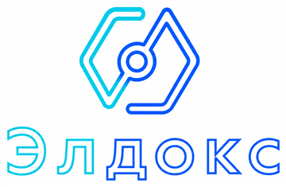

Документы уже уходят в электронный формат, но порядок не собран
Контрагенты, сотрудники и бухгалтерия работают в разных каналах. Документы теряются между почтой, мессенджерами, сканами и бумажными оригиналами.

Оставить задачуВнедрение и сопровождение Saby
Подберем состав сервисов, настроим маршруты, роли, документы и отчетность. Сначала покажем понятный ориентир бюджета, затем уточним смету под вашу компанию.
Контрагенты, сотрудники и бухгалтерия работают в разных каналах. Документы теряются между почтой, мессенджерами, сканами и бумажными оригиналами.
Сроки, статусы и отправка завязаны на одного сотрудника, а руководитель видит проблему слишком поздно.
Лицензии есть, но команда продолжает жить в Excel, почте и устных договоренностях.
Стоимость зависит не только от лицензии. На итог влияют город подключения, количество пользователей, сценарии работы, интеграции, обучение и сопровождение.
Маршруты согласования, обмен с контрагентами, статусы и порядок хранения документов.
Подключение, роли, контроль сроков, уведомления и регулярный порядок сдачи.
Настройка рабочих сценариев, прав доступа и связей между участниками процесса.
Кадровый контур, документы сотрудников, ответственные и контроль изменений.
Продажи, складские операции, маркировка, интеграции и подготовка сотрудников к запуску.
Роли, документы, маршруты, обучение команды и сопровождение после старта.
Этот блок стоит перед калькулятором не случайно: он объясняет, какие данные нужны, чтобы клиент понимал логику цены и не видел абстрактную цифру из воздуха.
Направление Saby и ожидаемый сценарий запуска.
Город подключения и региональные условия.
Пользователи, организации, документы, точки продаж.
Настройка, обучение, интеграции и сопровождение.
Расчет показывает предварительный диапазон и помогает понять порядок бюджета до консультации. Точную смету соберем после уточнения региона, состава работ и сценария запуска.
Опишите задачу в заявке: направление, город, количество пользователей и текущую ситуацию. Мы соберем первый ориентир и подскажем, что уточнить.
Сначала сверяем регион, задачу и процесс. Потом подбираем состав Saby, настройку и сопровождение. Так клиент понимает, за что платит, и не остается один на один с интерфейсом.
Контрагенты уже работают электронно, а внутри компании остаются сканы и бумага.
Результат: документы проходят понятным маршрутом и не теряются между каналами.Сроки, отправка и статусы держатся на ручном контроле одного сотрудника.
Результат: руководитель видит процесс раньше, чем возникает срыв срока.Сервисы уже есть, но сотрудники продолжают работать через почту, Excel и устные договоренности.
Результат: настройки, роли и обучение превращают подключение в рабочий инструмент.Ответы закрывают основные сомнения до заявки и помогают не перегружать первый контакт.
СБИС — прежнее название бренда. На сайте используем актуальное название Saby, а старое упоминаем только там, где это помогает клиенту сориентироваться.
Цена зависит от региона, направления, количества пользователей, сценариев работы, интеграций, обучения и сопровождения.
Да. Для этого нужен предварительный расчет: направление, город, масштаб и желаемый формат запуска.
Мы уточним параметры, соберем ориентир, объясним состав работ и после согласования подготовим точную смету.
Опишите, что нужно запустить в Saby. Достаточно общего понимания: направление, город, количество пользователей, сроки и текущая ситуация.